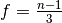
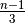
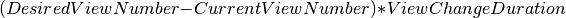

PBFT Architecture¶
The Sawtooth PBFT algorithm is a voting-based consensus algorithm with Byzantine fault tolerance, which ensures safety and liveness. The network can tolerate a certain number of “bad” nodes. As long as this number is not exceeded, the network will work properly. In addition, blocks committed by nodes are final, so there are no forks in the network.
The nodes on the network send many messages to reach consensus, commit blocks, and maintain a healthy leader node, called a primary node. The network switches to a new primary (called a view change) at regular intervals, as well as when the current primary is faulty.
The primary node builds and publishes blocks.
The other nodes (called secondary nodes) vote on blocks and the health of the leader.
Sawtooth PBFT runs on each node in the network as a consensus engine, a separate process that handles consensus-related functionality and communicates with the validator through the consensus API.
The following sections describe Sawtooth PBFT architecture:
Network overview: Describes PBFT fault tolerance, view changes, sequence numbers, and the information stored by each node
Consensus messages: Explains consensus message structures and message types
Sawtooth PBFT operation: Shows how the algorithm handles initialization, normal mode (block processing), and view changes
Network Overview¶
Fault Tolerance¶
A PBFT network consists of nodes that are ordered from 0 to n-1, where
n is the total number of nodes in the network. The
on-chain setting sawtooth.consensus.pbft.members
lists all PBFT member nodes and determines the node order.
The PBFT algorithm guarantees network safety as long as the number of faulty nodes remains below the required percentage. The maximum number of faulty nodes that the network can tolerate is determined by the formula . In other words, no more than one third of the nodes (rounded down) can be unreachable or dishonest at any given time.
For example, a four-node network can tolerate one faulty node. (PBFT requires a minimum of four nodes in order to maintain Byzantine fault tolerance.) Increasing the size of the network reduces the likelihood that all  nodes would be faulty at the same time.
View Changes: Choosing a New Primary¶
A view is the period of time that a given node is the primary, so a view
change means switching to a different primary node. The next primary is
selected in a round-robin (circular) fashion, according to the order of nodes
listed in the on-chain setting
sawtooth.consensus.pbft.members.
In a four-node network, for example, the first node (node 0) is the primary at view 0, the second node (node 1) is the primary at view 1, and so on. When the network gets to view 4, it will return to node 0 as the primary.
The algorithm uses the formula p = v mod n to determine the next primary. In this formula, p is the primary, v is the view number, and n is the total number of nodes in the network. For example, if a four-node network is at view 7, the formula 7 mod 4 determines that node 3 is the primary.
The Sawtooth PBFT algorithm changes the primary at regular intervals, as well as when the secondary nodes determine that the current primary is faulty. See View Changing Mode for a description of this process.
Sequence Numbers¶
In addition to moving through a series of views, the network moves through a series of sequence numbers. In Sawtooth PBFT, a node’s sequence number is the same as the block number of the next block in the chain. For example, a node that is on sequence number 10 has already committed block 9 and is evaluating block 10.
Also, each message includes a sequence number that indicates which block the message is for. For example, a message with sequence number 10 applies to block number 10.
Information Storage¶
Each node stores several key pieces of information as part of its state:
List of PBFT member nodes in the network (from
sawtooth.consensus.pbft.members)Current view number, which identifies the primary node
Current sequence number, which is also the number of the block being processed
The current head of the chain
If in normal mode, the step of the algorithm it’s on (see Normal Mode)
Log of all blocks it has received
Log of all messages it has received
Network Configuration¶
Sawtooth PBFT configures the network with on-chain settings, which are processed by the Settings transaction processor (or an equivalent).
These settings list each node in the network, set the view-change interval (how often the primary changes), and specify other items such as the block publishing frequency, timeout periods, and message log size. For more information, see Configuring PBFT.
Consensus Messages¶
All PBFT consensus messages are serialized as protobufs (protocol buffers).
When a node receives a new consensus message from another node, it parses the
protobuf into a native Rust struct (ParsedMessage) that allows for easier
handling of the message. After parsing, the node performs a series of checks to
ensure the validity of the message:
The
signer_idof the PBFT message must match thesigner_idof thePeerMessagethat contains it.The message must be from a known PBFT member (the
signer_idof the PBFT message must be in thesawtooth.consensus.pbft.memberslist)
The first check verifies that the PBFT message was created and signed by the
node that it claims to be from. The PeerMessage, which acts as a wrapper for
the PBFT message, contains a signature of the PBFT message and a signer_id;
this signature and ID are verified by the validator to ensure that the contents
of the PeerMessage are legitimate. PBFT then ensures that the signer_id
of the PBFT message matches the one the validator used, which guarantees the
origin of the PBFT message.
The second check ensures that only nodes that are accepted members of the PBFT network are able to participate in the consensus process.
Any messages that fail to parse or pass the required checks are ignored. If a message is successfully parsed and passes verification, it is passed to a handler for that specific message type (see Message Types), where it may go through further checks, be stored in the message log, or trigger some actions.
Message Definitions¶
Most Sawtooth PBFT messages use the PbftMessage protobuf, as shown below.
The PbftNewView, PbftSignedVote, and PbftSeal protobufs are
structurally different from PbftMessage and are used for messages that
require different sets of data to be exchanged.
Sawtooth PBFT also uses some of the message types defined in the consensus API,
such as BlockNew and BlockCommit. These messages are called “updates” to
distinguish them from the PBFT-specific messages. For more information on the
consensus API’s Update messages, see the Consensus API RFC.
// Represents all common information used in a PBFT message
message PbftMessageInfo {
// Type of the message
string msg_type = 1;
// View number
uint64 view = 2;
// Sequence number
uint64 seq_num = 3;
// Node who signed the message
bytes signer_id = 4;
}
// A generic PBFT message (PrePrepare, Prepare, Commit, ViewChange, SealRequest)
message PbftMessage {
// Message information
PbftMessageInfo info = 1;
// The block this message is for
bytes block_id = 2;
}
// A message sent by the new primary to signify that the new view should be
// started
message PbftNewView {
// Message information
PbftMessageInfo info = 1;
// A list of ViewChange messages to prove this view change (must contain at
// least 2f messages)
repeated PbftSignedVote view_changes = 2;
}
message PbftSignedVote {
// Serialized ConsensusPeerMessage header
bytes header_bytes = 1;
// Signature of the serialized ConsensusPeerMessageHeader
bytes header_signature = 2;
// Serialized PBFT message
bytes message_bytes = 3;
}
message PbftSeal {
// Message information
PbftMessageInfo info = 1;
// ID of the block this seal verifies
bytes block_id = 2;
// A list of Commit votes to prove the block commit (must contain at least 2f
// votes)
repeated PbftSignedVote commit_votes = 3;
}
Message Types¶
A Sawtooth PBFT message has one of the following types:
PrePrepare: Sent by the primary node after it has published a new blockPrepare: Broadcast by every node in thePreparingphaseCommit: Broadcast by every node in theCommittingphaseViewChange: Sent by any node that suspects that the primary is faultyNewView: Sent by the node that will be the new primary to complete a view changeSeal: Proves that a block was committed after2f + 1nodes agreed to commit itSealRequest: Sent by a node that is requesting a consensus seal for the block that was committed at a given sequence number
PBFT Operation¶
The Sawtooth PBFT algorithm starts with initialization, then operates in one of two modes:
Normal mode for processing blocks
View Changing mode for switching to a different primary node
Note
The original PBFT definition includes a checkpointing procedure that is responsible for garbage collection of the log. Sawtooth PBFT does not implement this checkpointing procedure; instead, it cleans the log periodically during its normal operation. For more information, see Log Pruning.
Initialization¶
When the Sawtooth PBFT consensus engine starts, it does the following:
Loads its configuration
Initializes its state and message log
Establishes timers and counters
Normal Mode¶
In Normal mode, nodes check blocks and approve them to be committed to the blockchain. The Sawtooth PBFT algorithm usually operates in normal mode unless a view change is necessary.
Procedure¶
The normal mode proceeds as follows:
All nodes begin in the
PrePreparingphase; the purpose of this phase is for the primary to publish a new block and endorse the block with aPrePreparemessage.The primary node will send a request to its validator to initialize a new block. After a configurable timeout (determined by the
sawtooth.consensus.pbft.block_publishing_delaysetting), the primary will send a request to the validator to finalize the block and broadcast it to the network.After receiving the block in a
BlockNewupdate and ensuring that the block is valid, all nodes will store the block in their PBFT logs.After receiving the
BlockNewupdate, the primary will broadcast aPrePreparemessage for that block to all of the nodes in the network. When the nodes receive thisPrePreparemessage, they will make sure it is valid; if it is, they will add it to their respective logs and move on to thePreparingphase.
In the
Preparingphase, all secondary nodes (not the primary) broadcast aPreparemessage that matches the acceptedPrePreparemessage. Each node will then add its ownPrepareto its log, then acceptPreparemessages from other nodes and add them to its log. Once a node has2f + 1Preparemessages in its log that match the acceptedPrePrepare, it will move on to theCommittingphase.The
Committingphase is similar to thePreparingphase; nodes broadcast aCommitmessage to all nodes in the network, wait until there are2f + 1Commitmessages in their logs, then move on to theFinishingphase. The only major difference between thePreparingandCommittingphases is that in theCommittingphase, the primary node is allowed to broadcast a message.Once in the
Finishingphase, each node will tell its validator to commit the block for which they have a matchingPrePrepare,2f + 1Preparemessages, and2f + 1Commitmessages. The node will then wait for aBlockCommitnotification from its validator to signal that the block has been successfully committed to the chain. After receiving this confirmation, the node will update its state as follows:Increment its sequence number by 1
Update its current chain head to the block that was just committed
Reset its phase to
PrePreparing
Finally, the primary node will initialize a new block to start the process all over again.
This diagram summarizes the four Normal mode phases, the messages sent, and the interactions with the validators. N1 is the primary node; N2, N3, and N4 are secondary nodes.
Log Pruning¶
Sawtooth PBFT does not implement a checkpointing procedure (garbage collection of the log). Instead, each node cleans the log periodically during normal operation.
Log size is controlled on each node with the --max_log_size option when
starting the PBFT consensus engine (see PBFT Command-Line Options). When a
block is committed, each node compares the size of its log against the maximum
size. If the log exceeds this value, Sawtooth PBFT uses these rules to prune the
log:
Keep blocks and messages for the sequence number of the block that was just committed, plus those for any higher (newer) sequence numbers
Delete blocks and messages for all lower (earlier) sequence numbers
View Changing Mode¶
A view change switches to a different primary node. A node starts a new view change if any of the following occur:
The idle timeout expires - when a node enters the
PrePreparingphase, it will start its idle timeout. If the node receives a new block and a matchingPrePreparefrom the primary for its current sequence number before the timeout expires, it will stop the timeout; if not, the node will initiate a view change when the timeout expires.The commit timeout expires - when a node enters the
Preparingphase, it will start its commit timeout. If the node is able to move on to theFinishingphase and send a request to the validator to commit the block before the timeout expires, it will stop the timeout; if not, the node will initiate a view change when the timeout expires.The view change timeout expires - when a node starts a view change to view
v, it will start a view change timeout. If the node is able to complete the view change before the timeout expires, it will stop the timeout; if not, it will initiate a new view change to viewv + 1.Multiple
PrePreparemessages are received for the same view and sequence number but different blocks - this indicates the primary is faulty, since this behavior is invalid.A
Preparemessage is received from the primary - this indicates the primary is faulty, since this behavior is invalid.f + 1ViewChangemessages are received for the same view - this ensures that a node does not wait too long to start a view change; since onlyfnodes (at most) can be faulty at any given time, if more thanfnodes decide to start a view change, other nodes can safely join them to perform that view change.
To start a view change, a node will do the following:
Update its mode to
ViewChanging(v), wherevis the view the node is changing toStop both the idle and and commit timeouts, since these are not needed again until after the view change
Stop the view change timeout if it’s been started; it will be restarted with a new value later
Broadcast a
ViewChangemessage for the new view
ViewChange messages are accepted and added to the log if they satisfy these
criteria:
They are for a later view than the node’s current view
If the node is in the mode
ViewChanging(v), the view in the message must be greater than or equal tov
Once a node has received 2f + 1 ViewChange messages for the new view, it
will start its view change timeout; this timeout ensures that the new primary
starts the new view in a timely manner. The duration of the timeout is
calculated based on a base duration (determined by the
sawtooth.consensus.pbft.view_change_duration setting) using the formula:
.
When the primary for the new view receives 2f + 1 ViewChange messages,
it will broadcast a NewView message to the network, signifying that the view
change is complete. As a proof that this view change is valid, the primary will
include 2f + 1 signed ViewChange messages from other nodes in the
NewView message (the primary’s own “vote” is implicit), which will be
validated by the other nodes.
If a node receives the new primary’s valid NewView message before its view
change timeout expires, it will:
Stop the view change timeout
Update its view to match the new value
Revert back to Normal mode
However, if a node’s view change timeout expires before it receives a
NewView, it will stop the timeout and initiate a brand new view change for
view v + 1 (where v is the view it was attempting to change to before).